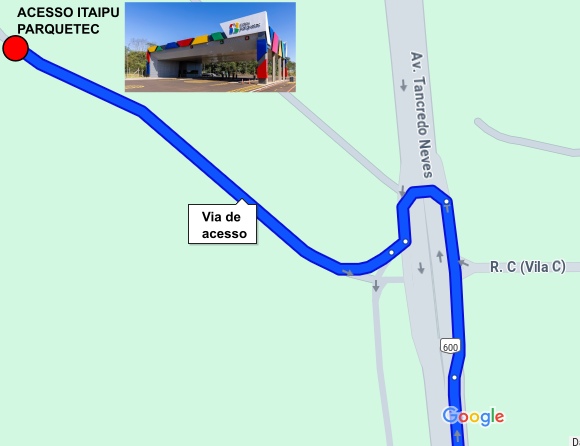

<section id="light-card">
    <div class="p-2 container col-sm-12 col-lg-8 text-justify">
        <h2 class="p-4 text-center">Transporte</h2>

        <h3>Carro, Uber ou Táxi</h3>
        <p class="lead">Participantes que virão de Taxi ou UBER, confirmar se o Uber está cadastrado na Foztrans (agência de trânsito de Foz).</p>
        <p class="lead">De carro - Necessário enviar para a coordenação do evento: <b>marca/modelo, cor e placa do veículo até o dia 14/04</b>b. Se houver motorista não inscrito no evento, enviar também CPF e RG.</p>
        <br>
        <p class="lead">Nestes casos, o acesso é feito pelo Portal do Itaipu Parquetec. Av. Tancredo Neves, 6731 - Jardim Itaipu, Foz do Iguaçu - PR, 85867-318 </p>
        

        
        <h3>Transporte Coletivo</h3>
        Em breve mais informações.
        
        
        <h3>Transporte Interno</h3>
        <p class="lead">Para quem usar o transporte coletivo e parar na barreira da Itaipu, poderá utilizar o transporte interno do parque desde que esteja com o crachá de credenciamento da Itaipu.</p>
        <p class="lead">O ônibus de Transporte Interno possui três paradas: Barreira da Itaipu / Cineteatro Barrageiros / Itaipu Parquetec. Você deverá desembarcar no Itaipu Parquetec.</p>

        <a href="https://habitante.itaipuparquetec.org.br/transporte-coletivo-itaipu-parquetec/">Horários ônibus interno</a>


        
        


        

        

